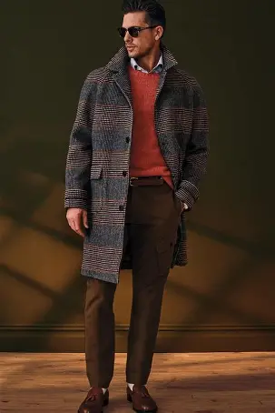
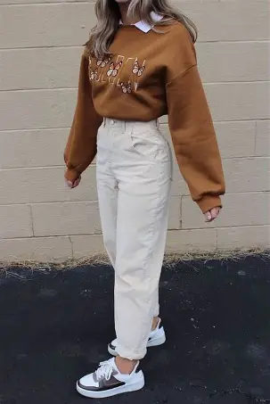

❄️ Winter College Outfit Suggestions
Based on your selections, here are some outfit suggestions for a casual day out:
🧥 For Men:
- Classic College Layering
- T-shirt + hoodie + jacket
- Jeans or chinos
- Sneakers
- Hoodie + Puffer Jacket
- Thick hoodie
- Puffer jacket
- Slim-fit jeans
- Sports shoes
- Sweater + Shirt Combo
- Collared shirt inside
- Crewneck sweater on top
- Trousers or jeans
- Sneakers
- Street Style Winter Fit
- Oversized sweatshirt
- Cargo pants
- High-top sneakers
- Beanie or cap
- Minimal Clean Look
- Turtleneck
- Wool coat or simple jacket
- Dark jeans
- Leather shoes or boots

🌸 For Women
- Sweater + Jeans Look
- Soft knit sweater
- High-waist jeans
- Sneakers or ankle boots
- Hoodie + Long Coat
- Hoodie inside
- Long coat or overcoat
- Straight pants
- Sneakers
- Oversized Sweatshirt Fit
- Oversized sweatshirt
- Joggers or wide-leg pants
- Chunky sneakers
- Kurti + Jacket Fusion
- Kurti + leggings/jeans
- Denim or wool jacket
- Boots or flats
- Turtleneck + Skirt (with layers)
- Turtleneck top
- Skirt + leggings/stockings
- Boots
